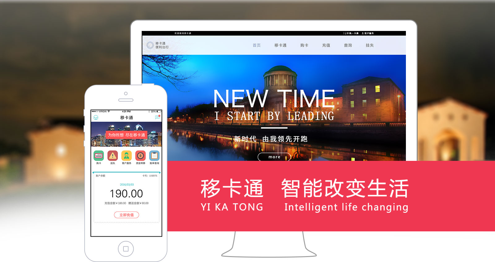
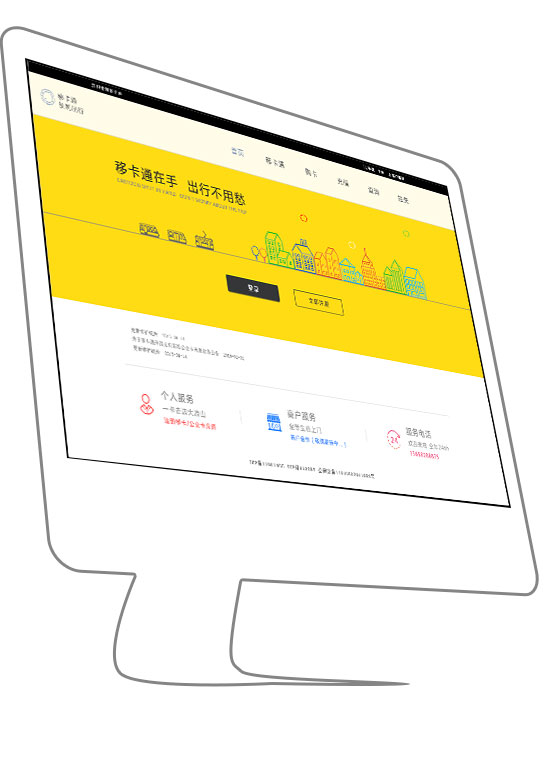
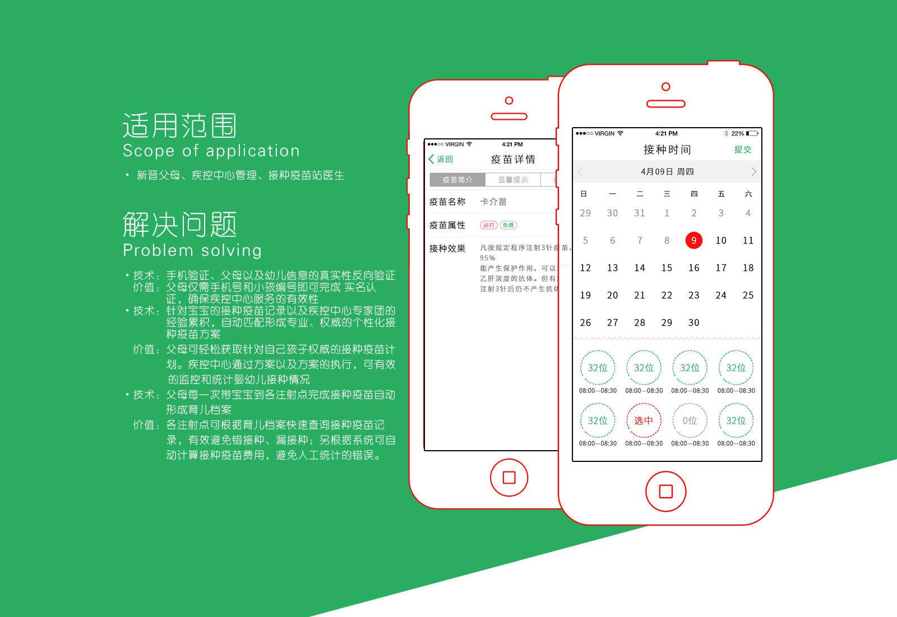
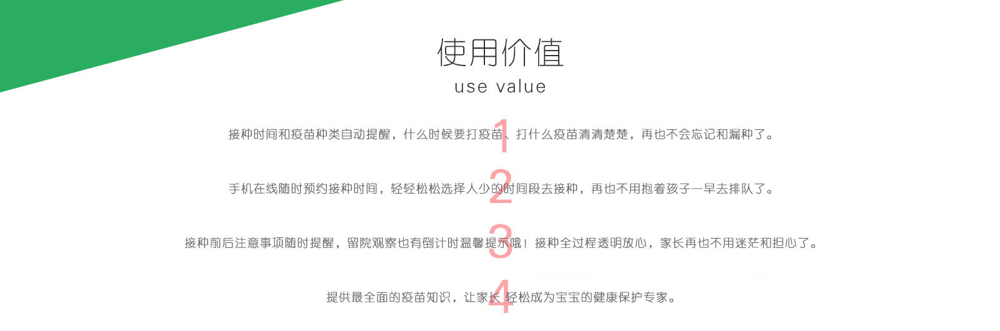
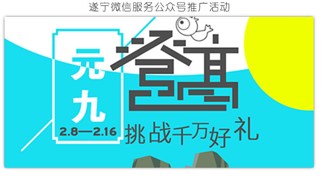
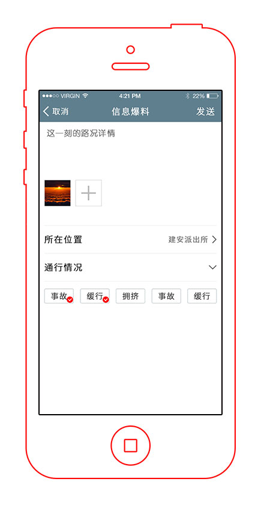

-


- 缩短回收周期，加快资金回笼速度
避免了资金在人工统计、核算、划拨中浪费的大量时间，
使款项的回收时间缩短为刷卡后第三个工作日 - 简化交易流程，提高业务管理效率
减少中间环节，不需要繁琐、低效、出错率高的人工对账、
人工划款等工作，业务管理效率大幅提高 - 降低业务管理成本
降低公司人员开支，减少出错率，
避免资金偷逃、滞留等，极大的降低了公司的成本支出 - 增加支付渠道，扩大业务可延伸范围
- 提高企业的信息化水平和管理水平，
有利于核心竞争力的塑造，提升企业形象
目前，一卡通的实际运用中比较突出的一个问题的是，各种管理系统只局限在计算机网络可以覆盖的地方，一方面不能及时准确的反映最终用户的实际情况，导致管理工作复杂化，另一方面用户充值等过程均需在营业网点执行，费时费精力，接受程度往往不高，甚至有抵触情绪。
而移卡通就是结合一卡通和手机支付技术，针对一卡通建设中的现有短板设计的，它巧妙的将一卡通各个系统与移动终端及IC卡、金融IC卡、NFC结合起来，提升了所有IT应用系统的运转效率，加强了各种管理系统的管理功效，更加便利于用户的实际使用场景。

市民、各一卡通企业

"延伸式服务"服务更具亲和力
搭建的手机应用以及短消息平台，开辟了为大众充值服务的又一通道， 把服务延伸到了手机，极具亲和力、影响力、吸引力和竞争力 这种方式相比于传统方式，更为高效和定向，信息的传递更为有效，使服务的及时性得到了极大的提升。
"个性化服务"与您的上帝"一对一"
应用平台可以根据不同用户群体、不同需求，更高效提供更多个性化的服务和信息。
"互动式服务"与大众共同创造价值
创建与大众间的双向沟通渠道，为大众提供主动服务的同时，更多了解大众需求，共同创造价值。
降低服务成本、提高服务效率
以手机应用+短信形式加强服务的同时，可以在传统手段基础上，大幅降低服务成本、提高服务效率。
- 缩短回收周期，加快资金回笼速度
-



-

01
产品简介
Product introduction
微信矩阵是针对企业解决微信运营过程中单纯的发布企业介绍、产品信息，操作简单却用处不大；发展关注用户的方向和方法不够专业；运营微信到底能够给企业带来怎样的创新营销；微信平台的技术接口无从下手，缺乏技术人才等诸多问题推出的新媒体营销管理平台。通过新媒体整合营销管理平台能够促进日常营销内容推送，在用户侧的打开率提高；能够有效地使营销帐号属性区分，定位更准确；通过新媒体整合营销管理平台的实施能够让用户兴趣爱好一目了然，营销更精准；达成多个新媒体平台互推，加大信息传播效力；同时利用新媒体整合营销管理平台整合统一管理的特性，极大的改善了以往同一营销内容发往多个新媒体平台的重复性操作，提升了营销推广的效率。
02
适用范围
Scope of application
各类型企业微信运营团队
03
解决问题
Problem solving
ο 多帐号一键管理
在微信矩阵中运营管理员可以将多个微信帐号添加到矩阵中实现信息一键发布到多个公众号、 活动一键同步到多个公众号，以及多帐号会员归集、运营、营销数据归集。 帐号设置可以将多个帐号的管理权限指派给一个或者多个运营管理员，并支持权限的分级分组。
ο 信息一键发布
运营管理员可将推送文章一键发布至一个或者多个矩阵内公众号，单微信公众号支持设置发送时间， 并支持对发送时间队列设置
ο 统一营销模板
预置10余种模板，支持对矩阵内公众号不同业务领域的呈现，亦可设置多帐号使用同一模板呈现业务内容
ο 统一活动
运营管理员可将活动同步到矩阵内一个或者多个公众号，实现一次配置，可复制到多帐号，不用反复设置
ο 统一会员
矩阵多帐号的粉丝以及认证会员，可统一集合在一处，可实现统一管理
04
使用价值
use value
ο 抢占最佳推送时间
微信矩阵多帐号，将信息推送时间段排期，能有效保持核心内容在用户的首屏，提升打开率至50%
ο 公众号属性区分，提高针对性
一个公众号无法按照粉丝喜好进行针对性推送文章，而建立矩阵可从公众号属性上将用户区分， 真正实现圈层式营销
ο 粉丝群体按照Focus区分，营销更精准
微信矩阵可通过多帐号有效的将粉丝群体按照喜好焦点区分，便于针对性制定营销策略
ο 多号互推，形成规模效应
在未建设微信矩阵前，公众号的传播性质为单向传播用户爱理不理，而建设微信矩阵后，阵列式传播 有效延长信息影响效力的衰减时间
-

产品简介
Product introduction
将驾驶员、乘车人、行人、其他交通参与者、巡道员的手机转变成为检测器，实时提供道路信息数据获取，利用光钎网络、移动通信网络，传输道路安全的相关数据，经过大数据处理平台完成数据的融合、识别、估计、预测处理，再利用互联网、移动互联网、广播传输数据，实现路径诱导、匝道控制以及交通信号实时变更。
适用范围
Scope of application
驾驶员、乘车人、行人、其他交通参与者、巡道员、道路交通管理部门
解决问题
Problem solving
利用现代化信息技术和手段，使道路交通上的人、车对道路在时间、空间上的合理均衡占用

使用价值
Use value
ο 驾驶员、乘车人、行人、其他交通参与者、巡道员，可利用手机APP文字记录、图片记录描绘道路安全问题，使交通管理 部门对于道路安全问题收集更为简便
ο 道路安全问题，可进行退回、追加等。有效的促进了道路信息的管理。
ο 道路信息可实时短信提醒驾驶员、乘车人、行人、其他交通参与者，对于减少和防范道路安全问题的产生起到直接作用力
ο 道路信息大数据分析，对路径诱导、匝道控制以及交通信号实时变更提供了切实可行的数据支撑能力